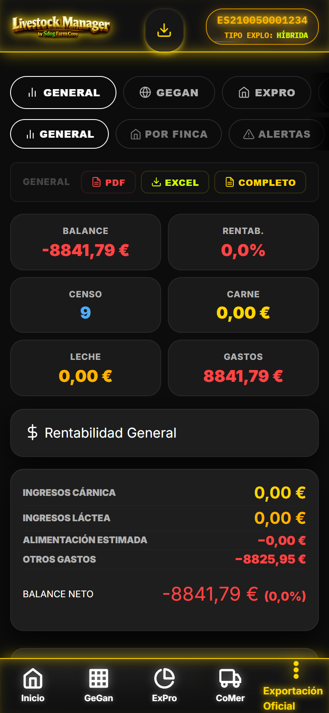

1. Vista Informes — 5 Categorias + 32 Sub-tabs
Consola unificada #/informes con sidebar categorias (General, GeGan, ExPro, CoMer, Libros) y area de contenido con sub-tabs horizontales scrollables. Header color purpura.
js/views/informes-view.js · window.InformesView1.1 Estructura de Categorias y Sub-tabs
| Categoria | Sub-tabs (Total 32) | Color |
|---|---|---|
| General | Dashboard, Resumen Finca, Censo, Produccion, Finanzas, Sanidad, Reproduccion, Trazabilidad | var(--c-purple) |
| GeGan (Ganaderia) | Animales, Rebanos, Patrimonio, Zonas, Sanidad, Movimientos, Alertas, KPIs Globales | var(--c-success) |
| ExPro (Produccion) | Ordeños, Pesajes, Entregas Tanque, Albaranes Leche, Analiticas, Balance Lacteo, Control Lechero, Silos, Graficos | var(--c-info) |
| CoMer (Comercializacion) | Ventas Carne, Entregas Leche, Compradores, Transportistas, Contratos, Albaranes/Facturas, KPIs Financieros | var(--p-gold) |
| Libros (Cuaderno Digital) | Tratamientos, Vacunaciones, Censo Anual, Crotales, Movimientos, Saneamientos, Fitosanitarios, Agenda | var(--c-orange) |
1.2 Motor de Renderizado
InformesView.render()genera sidebar + contenedor principal- Cada sub-tab delega a
InformesView.render{SubTab}()metodo especifico - 13 tipos de graficas Chart.js: linea, barras, barras agrupadas, barras apiladas, area, dona, radar, polar, scatter, bubble, gauge, mixed, sankey
- 23 tablas HTML5 con ordenacion, filtro, paginacion client-side
- KPIs semaforo (verde/ambar/rojo) con badges semanticos y tooltips
2. Categoria General — Resumen 360°
Vista transversal de toda la finca. 8 sub-tabs con KPIs principales y alertas criticas.
2.1 Sub-tabs General
| Sub-tab | Contenido Principal | KPIs Clave |
|---|---|---|
| Dashboard | Resumen ejecutivo: 6 KPIs principales + alertas criticas + grafica actividad 30 dias | Animales totales, Litros 30d, Peso canal 30d, Margen MOFA, Gastos mes, Alertas activas |
| Resumen Finca | Datos finca, REGA, flags, capacidad, superficie, ADSG, contrato lacteo | Carga UGM/ha, % ocupacion, Dias Guia 365 |
| Censo | Desglose por especie, categoria, sexo, estado. Grafica piramide poblacional | Total cabezas, % hembras, % activos, Renovacion % |
| Produccion | KPIs leche + carne unificados. Graficas tendencias 6 meses | Litros/dia, Peso canal medio, GMD, Rendimiento % |
| Finanzas | Gastos por categoria, ingresos por linea, flujo caja, MOFA real | Gastos totales, Ingresos totales, Margen neto, ROA |
| Sanidad | Tratamientos activos, supresiones, botiquin FEFO, vacunaciones proximas | Animales en supresion, Dosis FEFO <30d, Vacunas vencidas |
| Reproduccion | Celos, IAs, Diagnosticos, Partos ultimos 90d. Tasa exito | Tasa IA, Tasa preñez, Intervalos, Partos mes |
| Trazabilidad | Timeline 360° animal: movimientos, tratamientos, pesajes, reproduccion | Completitud % (meta 100%), Alertas integridad |
3. Categoria GeGan — Ganaderia (8 Sub-tabs)
Reportes especializados modulo Ganaderia. Header verde lima.
3.1 Sub-tabs GeGan
| Sub-tab | Contenido | Graficas/Tablas |
|---|---|---|
| Animales | Listado filtros avanzados: crotal, raza, rebaño, zona, estado, flags. Export | Tabla 15 cols + grafica distribucion por especie/edad |
| Rebaños | KPIs por rebaño: efectivos, produccion, sanidad, gastos, margen. Ranking | Tabla ranking + barras apiladas carne/leche |
| Patrimonio | Inventario ICA por animal: valor actual, depreciacion, plusvalia. Solo flag CARNE | Tabla ICA + grafica evolucion valor rebaño |
| Zonas | Carga UGM/ha por parcela, aforo, rotacion, fitosanitario. Alertas sobrepastoreo | Gauge circular por zona + heatmap carga |
| Sanidad | Libro tratamientos filtrado, supresiones activas/proximas, curva retiro | Timeline tratamientos + tabla supresiones |
| Movimientos | Altas/bajas/traslados periodo. Motivos oficiales. DIMOE/ICA generados | Sankey entradas/salidas + tabla movimientos |
| Alertas | Consolidado: Supresion, Vencimientos (PAC/Contratos/ADSG), Stock silos, Calidad leche | Bento alertas 12 tipos + contador dias |
| KPIs Globales | Dashboard consolidado modulo: 15 KPIs con semaforo y tendencia | Gauge KPIs + sparklines 6 meses |
4. Categoria ExPro — Produccion (9 Sub-tabs)
Reportes detallados produccion lechera y cárnica. Header azul.
4.1 Sub-tabs ExPro
| Sub-tab | Contenido | Graficas/Tablas |
|---|---|---|
| Ordeños | Registro diario por animal/tanque. Totales turno, temperatura, stock proyectado | Linea produccion diaria + tabla ordeños |
| Pesajes | Pesajes individual/lote. GMD, edad, rebaño, zona. Historico por animal | Barras GMD por lote + scatter edad/peso |
| Entregas Tanque | Recogidas cisterna: litros, temp, analiticas, contrato. Estado INFOLAC | Tabla entregas + linea volumen/temperatura |
| Albaranes Leche | Albaranes completos con liquidacion, Letra Q, inhibidores, analitica | Tabla albaranes + grafica precio €/L |
| Analiticas | Laboratorio: grasa, proteina, germenes, somaticas, aflatoxina M1. Semaforo CCAA | Radar calidad + tabla umbrales especie |
| Balance Lacteo | Movimientos entrada/salida/merma/ajuste por tanque. Trazabilidad litros | Area apilada balance + tabla movimientos |
| Control Lechero | DHI oficial: media rebaño litros/grasa/proteina, organismo, fecha | Linea tendencia control + tabla controles |
| Silos | Stock, autonomia, cargas/consumos, alertas. Gauge circular por silo | Gauge stock% + linea autonomia dias |
| Graficos | 5 canvas Chart.js: Produccion mensual, Calidad, Composicion, Comparativa tanques, Curva lactacion | 5 graficas interactivas full-width |

[CAPTURA] informes-expro-graficos.png Graficas ExPro: produccion mensual, calidad, composicion, tanques, curva lactacion5. Categoria CoMer — Comercializacion (7 Sub-tabs)
Reportes financieros y comerciales. Header amarillo/oro.
5.1 Sub-tabs CoMer
| Sub-tab | Contenido | KPIs/Tablas |
|---|---|---|
| Ventas Carne | Wizard Venta Masiva: animales, ICA, DIMOE, precio canal, SEUROP, comprador, transportista | Peso canal total, Rendimiento %, Margen neto, Ingreso bruto |
| Entregas Leche | Albaranes leche con analitica, precio extracto seco, INFOLAC, Letra Q | Total L, Precio medio €/L, Importe total, MOFA |
| Compradores | Ficha comprador: historial ventas, contratos, condiciones, REGA destino | Ranking volumen + tabla contratos |
| Transportistas | Certificados (ATG, desinsectacion, bienestar), vencimientos, matriculas | Tabla certificados + alertas vencimiento 30d |
| Contratos | Multi-precio por producto, IVA%, retencion%, vigencia. Alertas vencimiento | Tabla precios + timeline vigencia |
| Albaranes/Facturas | Historial integrado (borrador/presentado/validado/rechazado/anulado). PDF/Excel | Tabla estados + grafica facturacion mensual |
| KPIs Financieros | Margen neto real, coste/kg ganancia, ROE, EBITDA ganadero, flujo caja | Gauge KPIs + dashboard ejecutivo |
6. Categoria Libros — Cuaderno Digital RD 787/2023 (8 Sub-tabs)
Exportacion CSV SIGGAN 8 secciones obligatorias. Validacion pre-flight antes de exportar. Header naranja.
6.1 Sub-tabs Libros (Mapeo Directo CSV SIGGAN)
| Sub-tab | Seccion CSV SIGGAN | Campos Clave |
|---|---|---|
| Tratamientos | TRATAMIENTOS | Fecha, Animal, Producto, Dosis, Via, Veterinario, Retiro carne/leche, Lote, Receta |
| Vacunaciones | VACUNACIONES | Fecha, Animal/Rebaño, Vacuna, Lote, Veterinario, Dosis, Via, Proxima revacunacion |
| Censo Anual | CENSO_ANUAL | Fecha referencia, Especie, Categoria, Cabezas, REGA, Certificado |
| Crotales | CROTALES | Fecha pedido, Especie, Tipo, Cantidad, ADSG, Veterinario, Estado |
| Movimientos | MOVIMIENTOS | Fecha, Tipo (entrada/salida), Origen/Destino (REGA), Animales (crotales), Guia, Motivo |
| Saneamientos | SANEAMIENTOS | Fecha, Tipo (TB/Brucelosis/LEUCO), Rebaño, Animales, Resultado, Veterinario, CCAA |
| Fitosanitarios | FITOSANITARIOS | Fecha, Parcela, Producto, Dosis, Plazo seguridad, Apto comercializacion, Operador |
| Agenda | AGENDA (complementaria) | Fecha, Tipo, Titulo, Descripcion, Prioridad, Estado, Recordatorio |
6.2 Exportacion Cuaderno Digital (CSV SIGGAN 8 Secciones)
- Boton "Exportar Cuaderno Digital" genera ZIP con 8 CSV + README.md
- Validacion pre-flight obligatoria: REGA finca, ADSG, NIF veterinarios, Lotes medicamentos, Crotales 15 dig
- Nombrado:
CUADERNO_DIGITAL_{REGA}_{YYYYMMDD}.zip - Compatibilidad: SIGGAN (Andalucia), BADIGEX (Extremadura), SIA, PIGGAN
6.3 Validacion Pre-Flight (Bloqueantes)
- REGA finca formato valido (ES + 12 dig)
- ADSG registrada con veterinario y colegiado
- NIF/CIF titular y veterinarios validos
- Todos los tratamientos con lote medicamento y via
- Animales con crotal 15 digitos ISO 11784 completo
- Movimientos con guia oficial y REGA destino valido
7. KPIs Semáforo & Graficas (30+ KPIs)
Todos los KPIs usan componentes card-registro con toggle expandible (App.toggleResumen). Colores semanticos: success=positivo, danger=negativo, warning=atencion, info=neutro.
7.1 KPIs por Categoria (Ejemplos)
| Categoria | KPI | Verde | Ambar | Rojo |
|---|---|---|---|---|
| Leche | Celulas somaticas | <200k | 200-400k | >400k |
| Leche | MOFA €/L | >0.15 | 0.05-0.15 | <0.05 |
| Leche | Extracto seco % | >12.5 | 11.5-12.5 | <11.5 |
| Carne | GMD g/dia | >1200 | 800-1200 | <800 |
| Carne | Rendimiento canal % | >55 | 50-55 | <50 |
| Carne | Coste/kg ganancia | <2.00 | 2.00-2.50 | >2.50 |
| Sanidad | Dias supresion carne | >30 | 7-30 | <=7 |
| Sanidad | Botiquin FEFO <30d | 0 | 1-3 | >=3 |
| Repro | Tasa preñez % | >60 | 40-60 | <40 |
| Repro | Intervalo celo-parto dias | <90 | 90-120 | >120 |
| Zonas | Carga UGM/ha | <0.8 | 0.8-1.0 | >1.0 |
| Silos | Stock % capacidad | >50% | 15-50% | <15% |
| Finanzas | Margen neto real | >0 | -10% a 0 | <-10% |
7.2 Graficos de Rendimiento (Barras CSS Puras)
- Ultimos 6 meses, altura proporcionada al maximo
- Colores success/warning/danger segun valor vs umbrales
- Tooltips con valor exacto y fecha
- Responsive: apilado en movil, horizontal en desktop
8. Exportacion PDF/Excel/CSV & Validacion Pre-Flight
DocumentViewer comun para todos los PDFs (nunca window.open/print en Capacitor Android). Excel multi-hoja, CSV SIGGAN/XML REGA.
8.1 Tipos de Exportacion
| Formato | Uso | Detalle |
|---|---|---|
| Albaranes, Facturas, Informes, Documentos legales, Cuaderno digital | App.imprimirAlbaran(), App.imprimirFactura(), DocumentViewer | |
| Excel (.xlsx) | Informes multi-hoja, Listados grandes, Analisis financiero | SheetJS, multi-hoja por categoria/sub-tab |
| CSV SIGGAN | Cuaderno digital 8 secciones, Movimientos, Censo, Crotales | ZIP 8 CSV + README, validacion pre-flight |
| XML REGA | Declaracion censal, Pedido crotales, Notificaciones | Esquema oficial Junta Andalucia / CCAA |
8.2 DocumentViewer (Patron Comun)
- Componente full-screen
document-viewercon iframe sandbox - Botones: Compartir (Web Share API), Imprimir (nativo), Descargar, Cerrar
- Funciona en PWA, Capacitor Android, Electron, Navegador
- Nunca usar
window.open()owindow.print()directo en Android WebView
8.3 Exportacion Excel Multi-hoja (Informes)
- Una hoja por sub-tab activa
- Cabeceras con filtros, formato tabla Excel
- Hoja "Resumen" con KPIs principales
- Nombrado:
INFORMES_{CATEGORIA}_{SUBCAT}_{YYYYMMDD}.xlsx
9. Datos Demo CHAMORRO & Validacion
Validacion guias PWA 2026-08-04: GeGan 36/38, CoMer 40/42, ExPro 52/55 (vs 53/55 Android, 1 target por datos demo).
9.1 Cobertura Demo para Informes
9.2 Pruebas Clave Exportacion
- PDF Albaran Leche Wizard -> DocumentViewer -> Compartir/Imprimir/Descargar
- PDF Factura Venta Masiva -> DocumentViewer
- Excel Informes CoMer -> Multi-hoja 7 sub-tabs + Resumen
- ZIP Cuaderno Digital -> 8 CSV validos SIGGAN + README + pre-flight OK
- XML Declaracion Censal -> Esquema CCAA valido